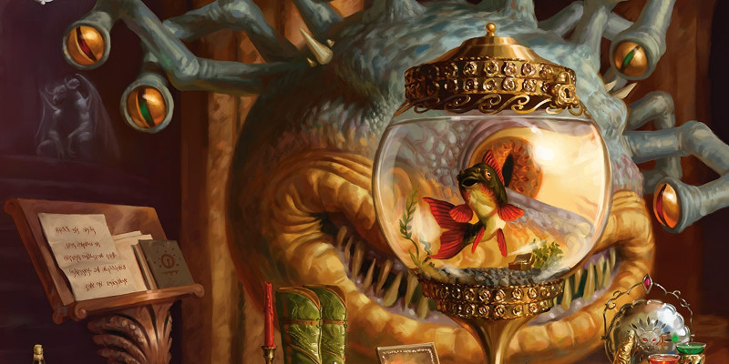

PNJ des Royaumes Oubliés
Présentation de différents personnages de l'univers de Dungeons & Dragons qui, pour certains, sont à l'origine du nom d'un supplément de règles pour D&D 5.
Drizzt Do'Urden
Drizzt Do'Urden est un personnage de fiction créé par R.A. Salvatore.
Drizzt Do'Urden est un rôdeur drow renégat à la chevelure blanche qui s'est échappé du régime oppressif de Menzoberranzan, en Outreterre. Ses actions à la surface lui ont valu d'être l'un des elfes noirs les plus célèbres de tout Faerûn. Se livrant souvent à des actes audacieux, il est devenu une cible privilégiée pour tous les drows, qui espèrent s'attirer les faveurs de leur terrible déesse Lloth s'ils parvenaient à le tuer. Drizzt porte une cotte de maille magique, présent du roi nain Bruenor, et se bat simultanément avec deux cimeterres magiques (Icingdeath et Twinkle). Son bien le plus précieux est toutefois une figurine en onyx qui peut prendre la forme d'une panthère dotée de pouvoirs surnaturels et qui porte le nom de Guenhwyvar. Mais il ne s'en sert qu'en cas d'extrême nécessité. Ses principaux compagnons sont Bruenor, Cattie-Brie, Régis et Wulfgar.
Elminster
Elminster est l'un des premiers PNJ des Royaumes Oubliés créés par Ed Greenwood.
Son âge est un mystère, mais selon la légende il était présent à Myth Drannor entre 240 et 260, et également en 1487 lorsque cette cité vécut ses dernières heures. La véracité de ces dires reste à démontrer, mais la plupart des habitants de Faerûn considèrent toutefois Elminster Aumar comme une force éternelle de ce monde. Ce magicien hors norme a élu domicile dans une toute petite communauté rurale de Valombre. Il voyage beaucoup, non seulement dans tous les Royaumes, mais également sur d'autres plans, où il côtoie le grand et le moins grand dans sa quête incessante du savoir. Elminster est sans aucun doute l'un des personnages les plus puissants, érudits et mieux informés de tout Faerûn. Il n'enseigne plus, ne travaille plus sur commande, sauf cas spéciaux, mais même s'il accorde une grande importance à son indépendance, il lui arrive encore d'ouvrir les portes de sa tour à des visiteurs. Nombre de ses anciens élèves et alliés font partie des personnes les plus puissantes des Royaumes, notamment les seigneurs de Waterdeep, la Simbule d'Aglarond et le groupe des Ménestrels.
Jarlaxle
Jarlaxle est un personnage de fiction créé par R.A. Salvatore.
Drow originaire de Menzoberranzan et reconnaissable à son chapeau pointu orné d'une plume magique et à son cache-œil lui aussi magique, charismatique chef et fondateur de Bregan D'aerthe, une organisation d'espions assassins et de mercenaires à la disposition du plus offrant, Jarlaxle est avant tout un opportuniste à la fortune considérable. Troisième fils de la matrone Yvonnel Baenre, frère de l'archimage Gromph, il fait aussi partie des rares mâles à posséder un certain pouvoir dans la société matriarcale des elfes noirs, même s'il passe de plus en plus de temps à la surface, notamment à Luskan, pour ses affaires. Il était proche du père de Drizzt Do'Urden et se considère maintenant un ami de ce dernier. Son principal lieutenant au sein de Bregan D'aerthe est Kimmuriel Oblodra, un psionique.
Laeral Silverhand
Laeral Silverhand est la cinquième des sept filles de la déesse de la magie Mystra. Elle a porté le titre de reine-sorcière du Nord et a également épousé Khelben Arunsun, le premier Bâton Noir de Waterdeep. Elle est l'actuel Seigneur manifeste de Waterdeep. Laeral est l'une des plus prolifiques créatrices d'objets magiques de l'histoire et pourrait déterminer les capacités d'un objet magique simplement en le tenant dans une main. Elle a également un don pour désactiver les pouvoirs d'un objet magique rien qu'en le touchant. Laeral est l'une des lanceurs de sorts les plus accomplies de Faerûn, même si ses pouvoirs déclinent régulièrement car elle doit consacrer de plus en plus d'énergie à maintenir son corps vieillissant âgé de plusieurs siècles.
Manshoon
Mage malfaisant, manipulateur et arrogant, le visage caché par un masque, Manshoon est connu en premier lieu pour avoir été le fondateur du Zhentarim en 1261. En 1370, son allié Fzoul l'assassina, mais Manshoon eut le temps de générer plus d'une douzaine de clones de lui-même avant de trépasser. Toutefois, tous ces clones commencèrent à se faire la guerre entre eux, et seuls trois réussirent à survivre. Le premier réintégra le Zhentarim sous les ordres de Fzoul mais fut tué par les shadovars lorsque ceux-ci détruisirent Château-Zhentil. Le second se réfugia à Undermountain et a dû affronter Halaster Blackcloack. Le dernier, devenu vampire et un temps connu sous le nom de Orbakh, trouva refuge auprès des voleurs de Port-Ponant [Westgate] et devint le chef des Masques de la nuit [Night Masks]. Après la Magepeste, il tenta de prendre le contrôle du Cormyr mais fut détruit par Elminster.
Mordenkainen
Mordenkainen est à l'origine un PJ de Greyhawk créé par Gary Gygax.
C'est un puissant magicien d'alignement neutre, manipulateur, qui s'efforce de garder l'équilibre entre le bien et le mal. Il est à l'origine du cercle des Huit, une cabale de magiciens (voir ci-dessous) dont lui-même en tant que chef en a été le neuvième membre.
Le cercle des Huit
Le cercle est à l'origine composé de huit magiciens : Mordenkainen, Bigby, Bucknard, Drawmij, Léomund, Nystul, Otto et Rary. Trois ans plus tard, Léomund se retire et est remplacé par Tenser, puis Otiluke se joint ensuite au groupe. Lorsque Bucknard disparaît, il est remplacé par une femme, Jallarzi Sallavarian. La cohésion du groupe sera finalement mise à mal suite à une trahison de Rary qui tuera Otiluke et Tenser, quatorze ans après la fondation du cercle.
Szass Tam
Szass Tam est une puissante liche, ces magiciens ou occultistes qui sacrifient tout pour obtenir la vie éternelle en devenant mort-vivant. Il était l'un des huit zulkirs du Thay, celui de la nécromancie, et est depuis 1385 seul à la tête de ce pays rempli de morts-vivants et d'orcs. Il est aussi le leader du millier de Magiciens rouges du Thay, même si plusieurs d'entre-eux aimeraient bien renverser leur chef suprême. Juste après la Magepeste, Szass Tam, affaibli, invoque Baine et lui demande de lui enseigner tout ce qu'il sait de la magie post-Magepeste ainsi que plus de puissance ; en échange il livrera son âme à ce dieu dans 1000 ans.
Tasha
Tasha est à l'origine un PNJ de Greyhawk créé par Gary Gygax.
Connue aussi plus tard sous le nom d'Iggwilv, Tasha est une puissante magicienne d'alignement mauvais. Enfant, elle a été adoptée par la sorcière Baba Yaga qui lui a apprit la magie. Maîtresse et alliée du Prince noir Graz'zt, Tasha est une ennemie des Neufs enfers et a combattu le cercle des Huit de Mordenkainen. Son familier est un quasit qui répond au nom de Black Comet.
Le Démonomicon d'Iggwilv
Tasha est l'auteur du Démonomicon, un ouvrage très complet sur l'histoire des démons et des Abysses et qui contient aussi de nombreux sorts et rituels d'invocations. Le Démonomicon est également connu pour contenir le vrai nom de nombreux démons.
Volo
Volo est un PNJ des Royaumes Oubliés créé par Ed Greenwood.
Volothamp Geddarm, souvent abrégé en Volo et à ne pas confondre avec le barde Marco Volo, est un magicien espiègle de bas niveau. Sa barbe soigneusement taillée, son béret distingué et sa langue acide en ont fait personnage célèbre dans tout Faerûn. Suite à de nombreux voyages, il a écrit plusieurs ouvrages, dont une série de guides sur différentes cités. Mais sa persévérance à relater les faits avec la plus grande honnêteté lui a valu de nombreux problèmes avec les autorités, des marchands ou des magiciens. Volo est en fait un sage qui s'intéresse à la magie, à la géographie et aux us et coutumes des Royaumes. Il est ainsi devenu un puits de science sur de nombreux sujets et est toujours disposé à partager ses connaissances. On le retrouve souvent en fuite, tentant d'échapper à un magicien courroucé ou à un tenancier d'auberge en colère.
Xanathar
Xanathar est le titre que se donnent les beholders qui se succèdent à la tête de la guilde des voleurs de Port-crâne, sous Waterdeep. Depuis 1479, le nouveau Xanathar est un jeune et ambitieux beholder répondant au nom de Zushaxx. Comme tous les beholders, c'est un tyran paranoïaque. Il a également noué une alliance avec le flagelleur mental Suthool et Belvarra Bowmantle, une agente d'Asmodée, dans le but de chasser le Zhentarim de Waterdeep. La seule créature à laquelle tient ce Xanathar est un poisson nommé Sylgar, qu'il garde précieusement dans un grand verre. La guilde du Xanathar opère sur toute la Côte des Épées.

Écrit par blueace et Shinvolo